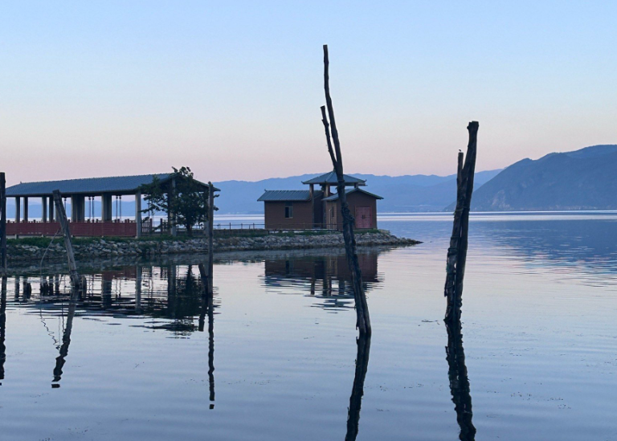
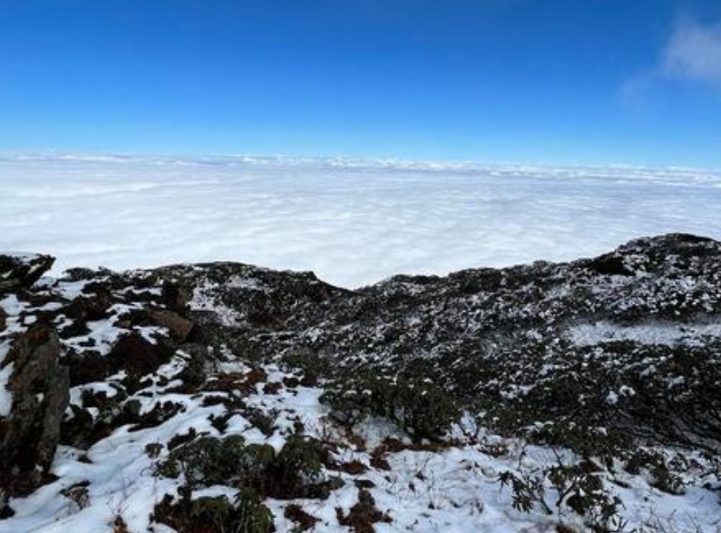
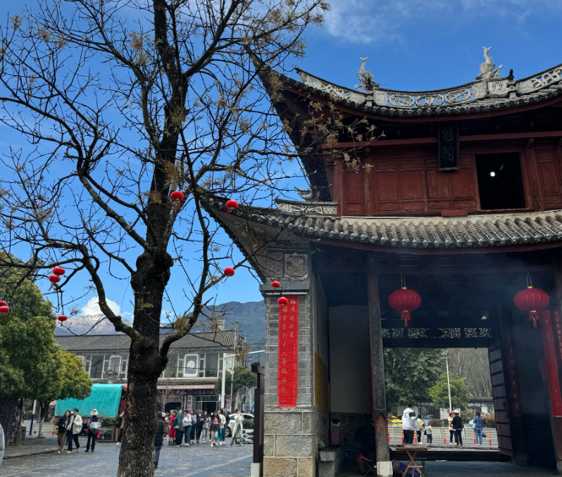
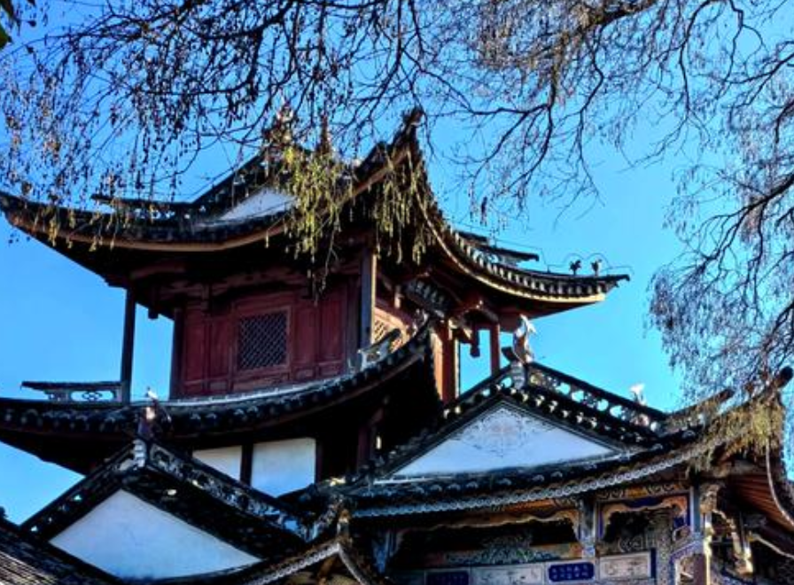

Must-Visit Destinations
Must-Visit Destinations




Dali Old Town
Dali Old Town is a beautifully preserved historical settlement dating back to the Ming Dynasty (1368-1644). Its cobblestone streets are lined with traditional Bai architecture, artisan workshops, teahouses, and boutique shops. The South Gate, with its imposing tower, offers panoramic views of the entire town and the surrounding mountains. Walking through the old town feels like stepping back in time, with the aroma of local tea and the sound of flowing water from ancient canals accompanying every step.
Butterfly Spring
Located at the foot of Yunlong Peak of Cangshan Mountain, Butterfly Spring is a natural spring pool surrounded by lush vegetation. Every year in the fourth month of the lunar calendar, thousands of butterflies gather around the spring, creating a breathtaking natural spectacle. The spring is famous in Chinese culture through the romantic folk tale "The Butterfly Lovers" and the 1950s film of the same name, making it a destination of both natural beauty and cultural significance.

Xizhou Village
Xizhou Village is one of the most well-preserved Bai ethnic villages near Dali. Known for its grand courtyard homes built by wealthy merchant families during the Republic of China era, Xizhou offers an authentic glimpse into traditional Bai life. The village is also famous for its tie-dye workshops, where visitors can learn the centuries-old indigo dyeing technique. The weekly market in Xizhou is a vibrant affair where locals gather to trade everything from fresh produce to handmade crafts.

Shaxi Ancient Town
Once a prosperous trading post on the Ancient Tea Horse Road, Shaxi Ancient Town is now a quiet, charming destination that has retained much of its original character. The town's main square, Sideng Market, is the only surviving market square from this historic trade route. Shaxi's well-preserved temples, theaters, and traditional houses offer visitors a rare window into the life of merchants and travelers who once journeyed between Yunnan and Tibet.